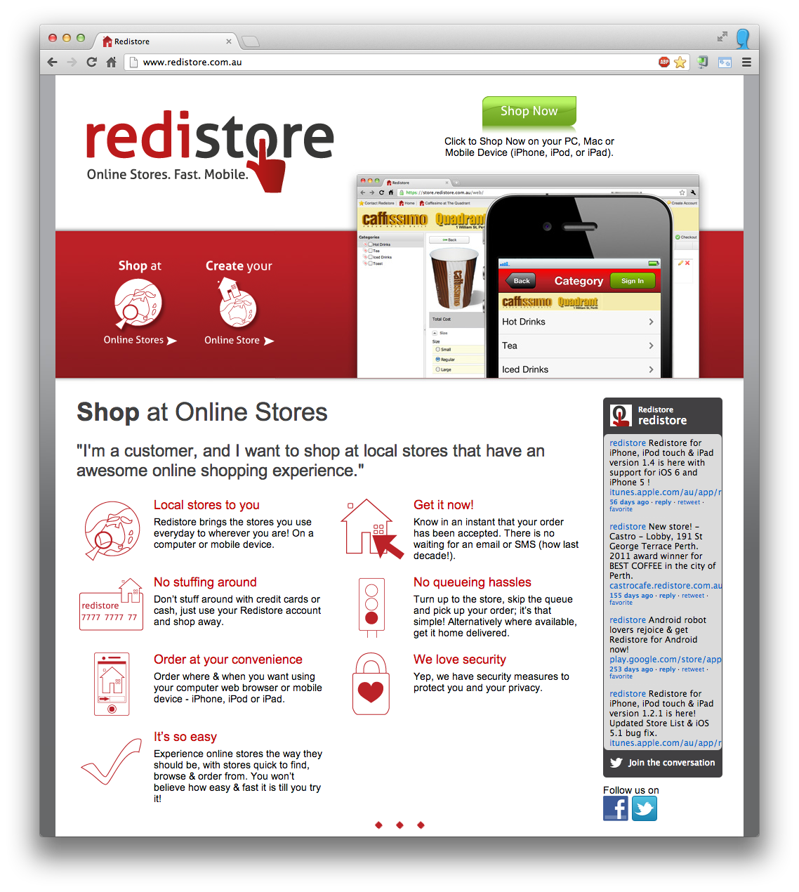
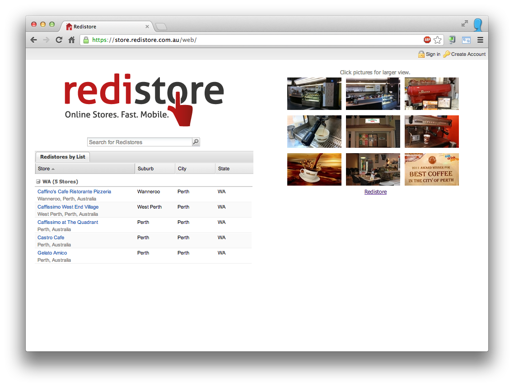
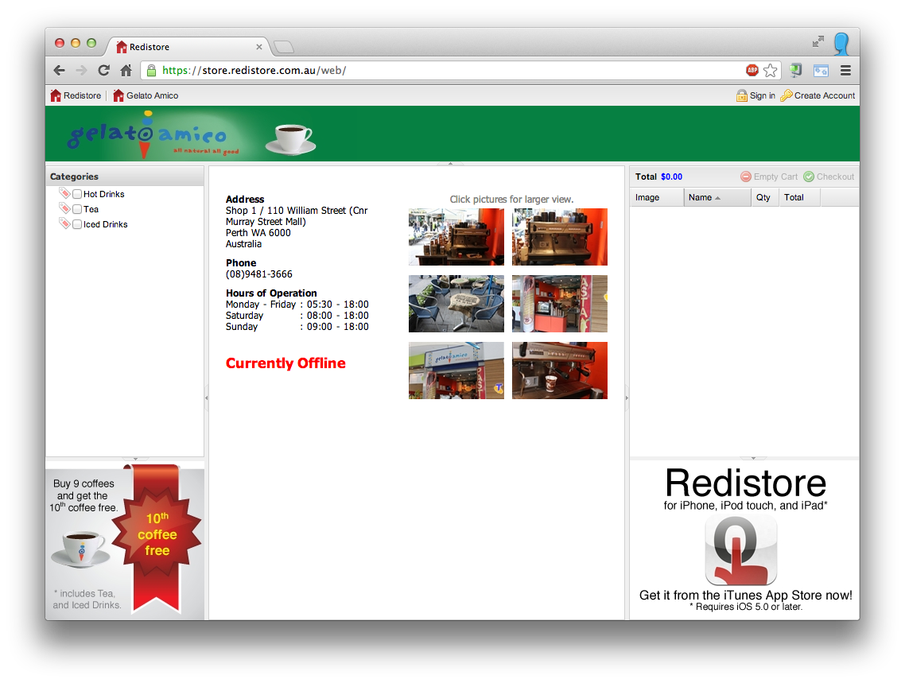
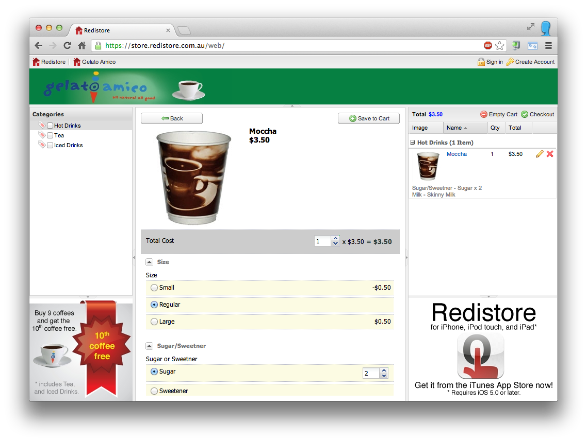
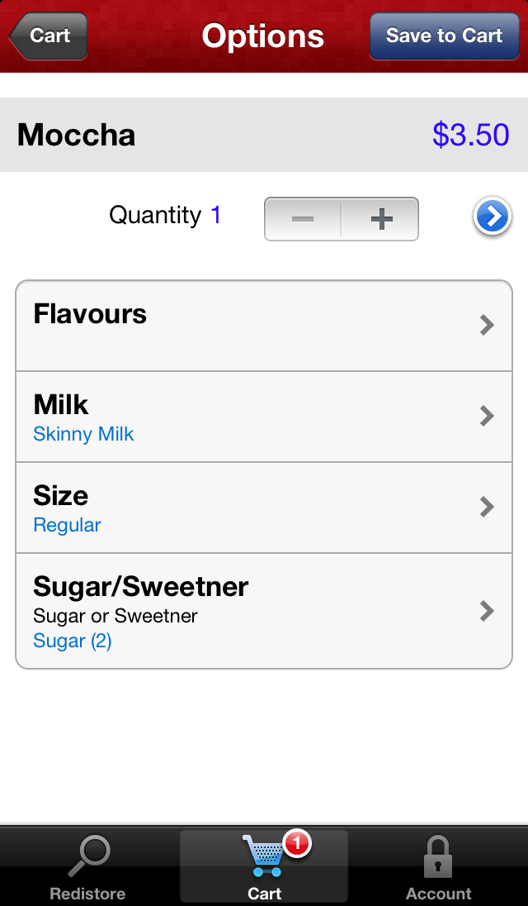
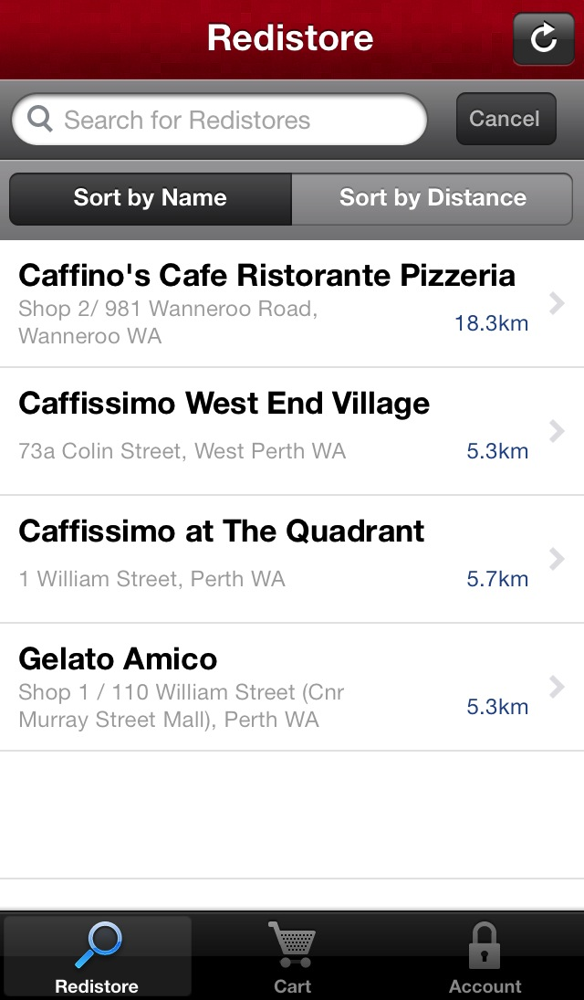
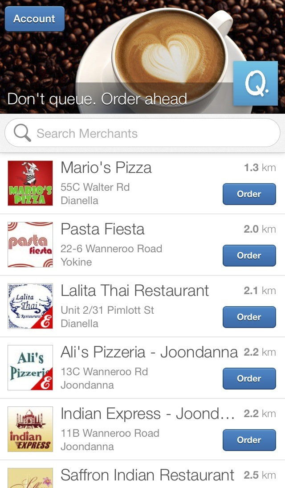

It was August 2010. Over 2 years ago. My beautiful daughter Abigail was 2 years old. The iPhone 4 had just come out, and the smartphone revolution was in full swing. All I needed was an idea. Somehow I found myself become part of a like minded, passionate and committed team, with some of the best people I have ever had the privilege or pleasure to work with. I say somehow because I’ve always tried to go with the flow. It just happened. Redistore was born.

The idea and vision was simple. Wouldn’t it be cool if you could order and pay for your coffee before you arrived at the store, just waltz in, bypass the queue, pick it up and go. It’s paid for so there’s no fumbling around for change, or paying with a card which was time consuming before contactless payment, e.g. MasterCard PayPass. I thought the idea had potential. The team thought the idea had potential. People we talked to thought the idea had potential. We decided as a team to take a risk. ‘If you build it, he will come’, we all heard the voice whisper. Others were skeptical, but not us. We built it.
2 years later, and Redistore has failed. This is what I learnt.
Reality
I can still remember how it started. The excitement of exploring the idea. Formulating it. Talking about it. Becoming a team. It felt awesome. That’s the Hollywood beginning.
The reality was a hard slog of trying to work two jobs. 15 to 16 hour days, 5 to 6 days a week. Rise at 6am, cycle to work and be working by 7am. Leave at 4pm. Be home and sorted by 5pm. Two hours to spend with my family, which I’m guilty of not doing enough of. At work by 7pm. Work till 9pm or 10pm. Rinse and repeat. And don’t forget the weekends. You get the picture. I had no life.
Tech
But we built something that’s bloody cool and has possibility. A fully customisable, real time online ordering system for low value, high volume consumables. Coffee stores. Take away food. The order is paid for by the customer using their Redistore account which they can ‘top up’ using PayPal or a Credit Card. The store gets a verified order. It’s in real time. There’s no queueing. Win win.
The technology and platform that we built was the fun part.
The customer web client was built using Sencha ExtJS 3 and supports all major browsers. It was designed and built from scratch to provide a fast UX (User Experience) for browsing stores and ordering, unlike most classic page request and response web stores. ExtJS is an amazing platform, but has a steep learning curve, and ExtJS 4 broke compatibility for ExtJS 3 apps; there is significant work required to upgrade your app.
  
The now defunct customer mobile client was built using Sencha Touch 1. The native vs. web app mobile holy war was raging, and we decided to build a web app. It was a mistake. The mobile client worked adequately on iOS, but on Android it was unusable. The tools were not ready. Facebook had not yet admitted their mistake, nor Sencha fired their Fastbook return. We needed a great customer UX, and didn’t have it.

The store receiver client was also built with Sencha Touch, and performs adequately for stores on an iPod.
The web clients communicate via Ajax to the back end action style JSON based web services developed using .NET WCF. If building using the same core technology now, we’d seriously look at Web API and RESTful services. There’s also a ton of awesome back-end enterprise system type stuff (database, reconciliation, reporting, MI etc.), that was built by a Cylon. Seriously. They work hard, I guess because they don’t need to sleep.
To address the great customer mobile UX, after go-live we spent 3 months building a native iPhone app, and 3 months building a native Android app. It was a great learning experience at the cost of 6 months of effort. Without getting into details of our approach, or religious debates, I hope that we (the industry) can move forward to the web. How we do that is for smart people to work out.
Go Live
We went live on Friday 1st April 2011 (oh the irony) after 8 months of intense development. There were teething problems as with any new production system, and we worked through them to get it to a stable state.
We tried to sell it mostly to coffee stores the old fashioned way, by approaching them, talking to them about it, showing them what it could do. Once we had a store on board we did really simple customer advertising at the store.
Although it’s far from being a runaway success, it has and continues to be successful, in that it ticks along and is used every single business day, with no issues.
Over 18 months in production, what are the stats?
- 250 accounts. 43 active in November 2012. 68 with a balance > $5.
- 5 stores. 2 active.
- 4,712 orders (multiple items per order). 63% using web. 36% using mobile.
- 1,900 top ups (min $5 per top up).
The order percentages between web and mobile are interesting. The 2 active stores are located in office buildings, and it implies customers prefer using the web client to order from their desks, before going down to pickup their order.
Reflection
The enthusiasm and commitment for the idea and vision has dispersed. What it could have been didn’t materialise, and not by lack of effort.
I don’t think we really understood our customer, as we really just replaced phone orders. We didn’t have an automated store onboarding process, so bringing stores on was a long complicated process. We didn’t do marketing.
We took a gamble, and it didn’t pay off. We failed.
End
It’s time to move on. To take what I’ve learnt and move forward. I’m excited about seeking new ideas and projects. Exploring. Finding. Trying. I love the process of creating things. I’ve heard the expression ‘fail fast’, but I think you should ‘fail meaningfully’ at something you choose, have passion for, believe in, and work hard at. Learning takes quality time.
It’s time to move on … after I finish reading The Lean Startup by Eric Ries.
Update: September 22, 2013
PayPal released their updated app for iOS, version 5.0.1 on September 5, 2013. It’s shown below next to Redistore for iOS, which introduced store distance features in version 1.3 released on April 23, 2012. Looks like there is some similarity.

